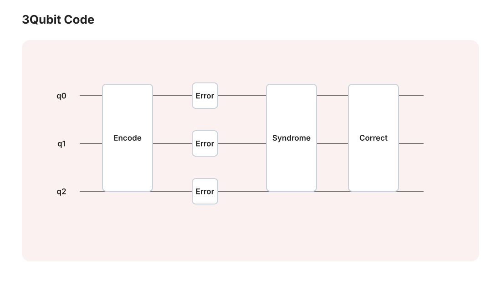

量子信息 III · 量子纠错与 NISQ
对标：Nielsen & Chuang §10 ｜ 前置：qi-01/02、aqm-03（退相干）、信息论 II（经典纠错） 量子计算的生死题：叠加态碰不得（测量塌缩）、复制不得（不可克隆）、还被环境持续偷看（退相干）——纠错似乎三面无门。本页讲透绕出去的思想（把信息藏进纠缠、只测"错误的指纹"），走到阈值定理与今日 NISQ 现实。

1. 三重困境与破局思想
经典纠错靠复制（重复码多数表决）——量子三堵墙：不可克隆（qi-01）；测量破坏叠加；错误还是连续的（任意小角度偏转，不止翻转）。
破局（Shor 1995）：不复制态，把逻辑信息编进多体纠缠的关联里；不测数据，测错误征状（syndrome——稳定子的本征值：只暴露"哪错了"、不暴露"\(\alpha, \beta\) 是多少"）；连续错误被征状测量离散化（塌缩到"没错/X 错/Z 错"的分支——测量的破坏性反成盟友）。
2. 三比特码到 Shor 码【推导级】
三比特翻转码：\(|0_L\rangle = |000\rangle,\ |1_L\rangle = |111\rangle\)（编码 = 两个 CNOT——是纠缠不是克隆：\(\alpha|000\rangle + \beta|111\rangle \neq (\alpha|0\rangle+\beta|1\rangle)^{\otimes3}\)）。征状测量：测 \(Z_1Z_2\) 与 \(Z_2Z_3\)（奇偶校验的量子版）——四种征状定位"哪一位翻了"而对 \((\alpha, \beta)\) 零信息；按征状施 \(X\) 修复。\(\blacksquare\) 只防 \(X\) 错；相位错（\(Z\)：\(|1\rangle \to -|1\rangle\)——量子特有）在 Hadamard 基下是翻转错 ⇒ 三比特相位码同构。
Shor 九比特码：两层嵌套（相位码套翻转码）——任意单比特错误（\(X, Z, Y = XZ\) 及其任意线性组合——连续错误的离散化在此兑现）可纠。稳定子语言一嘴【引用】：码空间 = 一组对易 Pauli 算符的共同 +1 本征空间——群论（抽代线）接管纠错设计；CSS 构造把经典好码成对翻译成量子码。
3. 阈值定理与表面码
定理（容错阈值）【引用+机理】 若单步物理错误率 \(p < p_{\text{th}}\)，则用码级联/扩码可把逻辑错误率压到任意小，开销多项式对数级。 机理：一层编码把错误率 \(p \to cp^2\)（两个错才致命）——\(p < \frac1c\) 时逐层平方压低（与 it2-02 信道编码定理同一精神：冗余对抗噪声，量子版的额外难点是纠错电路自己也出错——"容错"二字的分量）。
表面码（当前主流路线）：qubit 排在二维格上、只需近邻测量（工程友好），阈值高（~1%——实验可及）；逻辑错误率随码距指数压低——2023–24 年起 Google/各平台已演示"扩码变好"的盈亏平衡跨越【引用】：纠错从理论走进了数据。代价：一个好逻辑比特 ≈ 千级物理比特——"百万物理比特跑 Shor"的产业路线图刻度。
4. NISQ 现实地图（2026 快照，按老规矩标注时效）
NISQ（含噪中等规模量子）：百到千级物理比特、无全面纠错。现实主义三条：
- 变分算法（VQE/QAOA——qm-04 变分法 + 经典优化外环）是主打，但"量子优势"在化学/优化上尚未对经典最优基线确立【引用】；"量子霸权"演示（随机线路采样）是里程碑而非应用；
- 量子模拟（费曼的初心：用量子系统模拟量子系统——化学/材料/格点模型）是最被看好的首个实用赛道（cm/mb 线的哈密顿量是目标客户）；
- 评估任何"量子加速"新闻的三问：比的是什么经典基线？端到端还是核心子程序？错误率与规模可扩吗？——你的 verify 文化在此照常执法。
5. 练习与要点
例 1（三比特码全流程） 编码 \(\alpha|000\rangle + \beta|111\rangle\)、手动加 \(X_2\) 错、算两个征状 \((Z_1Z_2, Z_2Z_3) = (-1, -1)\) ⇒ 定位第 2 位、修复——十分钟把"不可能的纠错"变成线性代数作业。
例 2（为什么征状不泄密） 验证 \(Z_1Z_2\) 对 \(\alpha|000\rangle + \beta|111\rangle\) 与对 \(\alpha|100\rangle + \beta|011\rangle\) 分别给 \(+1, -1\)——本征值只依赖错误、不依赖 \((\alpha,\beta)\)："测关联不测内容"的显式验证（信息论视角：征状与逻辑信息的互信息为零）。
例 3（开销算术） 逻辑错误率目标 \(10^{-12}\)、物理 \(p = 10^{-3}\)、阈值 \(10^{-2}\)：表面码 \(\epsilon_L \sim (p/p_{th})^{d/2}\) ⇒ 码距 \(d \approx 24\) ⇒ 每逻辑比特 \(\sim 2d^2 \approx 10^3\) 物理比特——"跑 Shor 破 RSA-2048 需千逻辑 × 千物理 = 百万级"的账本来源。\(\blacksquare\)
下一门：宇宙学两页——把 FRW 度规（gr-03）交给 Friedmann 方程，从大爆炸热历史走到 CMB。